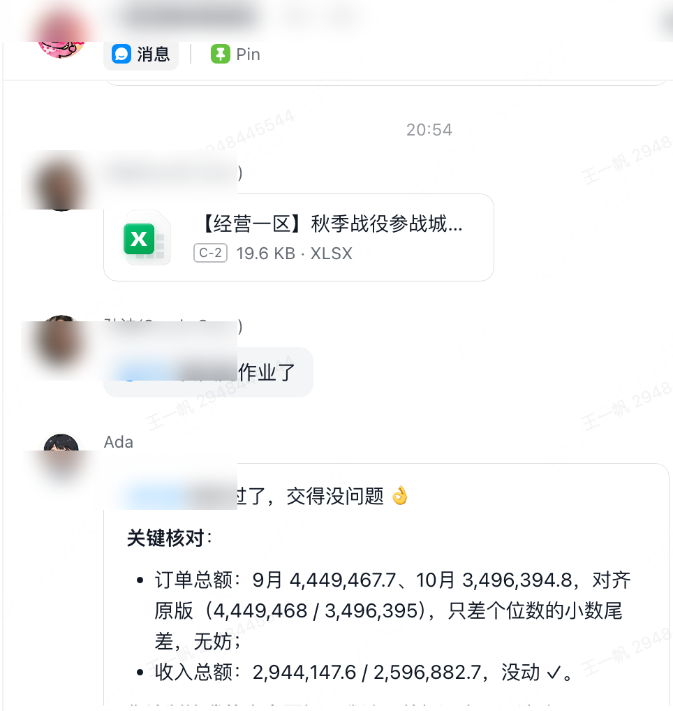
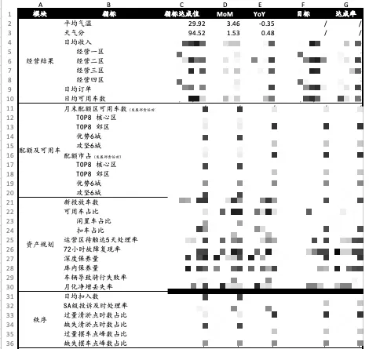

运行数据一览近 7 天 · 群聊 / 私聊 / 定时任务三类入口
端到端时延包含数据源查询与归因计算，不只是模型推理。
功能介绍
| 能力 | 要点 |
|---|---|
| 统一指标查询 | 单 / 多指标、跨对象对比、目标达成查询；数值标注来源，可回溯验证 |
| 异动归因引擎 ★ | 「先外后内、先大后小」：天气/节假日优先排除 → 供给 → 需求；量化到 pp 级贡献，拒绝模糊结论 |
| 目标管理 | 实际值与目标值分源获取、MTD 达成率、Gap 定位；目标拆解到城市 |
| 报告自动化 | 周/月复盘自动生成并发布到内部知识库；每日定时巡检城市指标异常 |
| 分层交互 | 群聊结论先行、限长、密级管控；私聊完整报告 + 多轮追问 |
| 统一鉴权与权限管控 | 下游调用统一 SSO 换票校验，按对话人身份隔离、最小授权、留痕可审计 |
界面 Demo真实产品形态 · 示意对话基于真实归因流程
产品形态：前端机器人，后端编排
前端即 IM 机器人——用户在群聊 / 私聊 / 定时任务三类入口直接对话，零学习成本；后端由企业 Agent 平台统一编排：机器人接收消息 → 意图识别与数据源路由 → 调用接入的业务看板 / 数据平台接口完成取数、目标上传等动作 → 结构化回复，全程统一鉴权与留痕。
| 因素 | 表现 | 贡献 |
|---|---|---|
| 天气（优先排除） | 天气分 82 → 61，中雨 | -5.2pp |
| 供给侧 | 可用车 -3.1%（故障上升） | -1.8pp |
| 需求侧（残差） | — | -1.0pp |
▲ 真实交互形态：结论先行 → 量化归因表 → 数据来源标注 → 行动建议
AI 实践成果三条端到端业务链路 · 真实截图
协作模式：人定义问题和验收标准 → Skill 执行单步确定性任务 → Agent 编排多 Skill 完成端到端链路 → 最终结论由人审核确认。
月度预测 → 目标拆解 → 目标上传
天气取数 → LightGBM 预测分天订单收入 → 按节假日节奏拆解到天 → 自动上传目标平台，一句话触发。
MAPE<5%，取数到上传 2–3 天手工流程 → 分钟级
文档生成 → 数据管线 → 异动归因
自动创建月报文档串联撰写→检查→审核→发布；批量查询达成值/MoM/YoY 回填模板；归因下钻 Top5 城市。
月会「一张表」由定时任务自动回填，接口直连保障准确性
信息收集 → 数据问答 → 预警校验
自动收集各经营区预警提报并提醒 DDL；自然语言数据问答；用实际时序数据交叉验证自报影响合理性。
群内自动验收作业，人从重复沟通中解放


Skill 资产：13 个业务 Skill 发布至企业技能广场，累计下载 493 次、调用 509 次。
实现逻辑
① 三层能力架构
数据查询
意图识别 → 自动路由到正确数据源（看板 / SQL / 指标平台），模糊问法追问不猜测
归因诊断 ★
异动检测 + 排除法 + 连环替代法，因素贡献量化到 pp 级
策略建议 + 效果复盘
基于归因结论匹配策略：供需匹配（补车调度 / 区域调平衡）、价格策略（补贴敏感度分档）、天气与节假日保障方案；策略落地后基于实验组 / 对照组数据自动复盘增量效果，形成「归因 → 策略 → 验证」闭环
L3 同样承载月度预测、目标拆解与周月复盘报告自动生成；架构模式：复用平台原生 Skill 发现与匹配（非自建 Router），自定义业务 Skill 沉淀方法论，与取数、文档、可视化 Skill 协同编排。
② 知识库与指标图谱——归因能力的地基
指标因果图谱
指标为节点、4 种关系为边（分解/影响/抑制/传导）；内嵌 5 条归因推理规则（天气优先、供给先于需求、相关性≠因果…）
协同建设机制
零代码应用唯一数据源（4 张表），9 模块 Owner 分权；AI 零写入，人类逐条确认 + 版本回滚
策略知识库
30+ 策略原子六类，按「收敛→分层→基准→判定→分解→下钻→收口」串成流水线
运营与自迭代
弃纯 RAG，增量编译 Wiki（Ingest/Query/Lint）复利增长；「记忆 → Skill」自迭代闭环
查询引擎为嵌入式图数据库，查询前自动版本同步（约 200 节点 / 500 边，重建 <2s）。
站在业界肩膀上，做得更落地参考 Genie / Tableau Pulse / Manus / Letta 等头部 Agent 的设计范式
设计上参考了 Databricks Genie、Tableau Pulse、Manus、Letta（MemGPT）、AutoGen 等业界头部 Agent，但不照搬——针对骑行业务「口径乱、归因靠经验、流程靠人工」的真实痛点，做了五件更落地的事：
- ① 用「因果图谱 + 接口取数」替代业界主流的 NL2SQL——指标口径硬编码在图谱里（200 节点 / 500 边），数值必标来源可回溯，工具成功率 99.5%，规避 ChatBI 类产品普遍的幻觉与难溯源问题
- ② 把 BI 产品的「维度下钻式归因」升级为因果量化引擎——排除法 + 连环替代法，贡献量化到 pp 级，5 条推理规则硬约束，专家基准评测一致率 92%
- ③ 借鉴 Manus / Devin 的端到端编排，落到生产级——月度预测全流程一句话触发，取数到目标上传 2–3 天手工流程 → 分钟级，MAPE<5%
- ④ 借鉴 Letta（MemGPT）记忆分层并更进一步——「记忆 → Skill」自迭代闭环，好经验蒸馏验证后版本化发布为技能，13 个业务 Skill 已发布企业技能广场
- ⑤ 借鉴 AutoGen / CrewAI 多智能体但避开互传幻觉——Skill 干确定性活 + Agent 编排链路 + 人审核结论，三条业务链路日稳定运行
正在引入的业界设计（Roadmap）
指标语义模型开放
因果图谱升级为可复用语义层，其他 Agent、看板、报表直接调用同一套口径，一次治理全网受益
从问答到订阅
指标波动、达成风险、归因摘要自动推送 + 个人订阅，从「人问它答」升级为「它主动找人」（定时巡检已上线）
计划-执行-验证循环
复杂归因任务先输出分析计划再执行，中间步骤可观测、可干预，长任务不再黑盒
归因计算沙箱化
归因与预测计算在隔离沙箱运行，杜绝误操作写数据，结果可复现、可审计
多智能体协作（借鉴 AutoGen / CrewAI 编排范式）已在 Multica 平台规划多 Agent 分工，覆盖跨业务线协同分析。
质量与评测
专家基准评测 · 已落地，归因一致率 92%
以历史周会专家人工归因过的异动案例为 ground truth：Agent 重跑历史数据、还原当时异动场景独立归因，与专家结论逐案比对——一致率 92%。标尺来自业务专家与历史数据，而非模型自评。
六维评测框架 · 规划中（长期监控）
查询准确 25% · 归因质量 25% · 业务知识 15% · 安全合规 15% · 输出规范 10% · 交互体验 10%；每 case 5 分制、加权 ≥3.5 合格，含负样本测试集，每轮迭代回归、长期跟踪质量水位。
验证与成果
- 0→1 上线企业 Agent 平台，覆盖四个业务区域 + 商分 + 管理层：日活用户 50+、工具调用累计破万、近 7 天对话 500+ 次成功率 100%、归因一致率 92%
- 三条端到端链路落地：预测全流程 MAPE<5%、2–3 天手工流程 → 分钟级一句话触发；月报「一张表」定时任务自动回填；13 个业务 Skill 发布企业技能广场
- 知识体系落地：因果图谱 200 节点 / 500 边、9 模块多 Owner 协同、AI 零自主写入、策略原子 30+ 条入库
- 演进目标（设定中，验证中）：单次经营分析 2–4 小时 → 5 分钟内；覆盖头部 10 余城 → 全量 100+ 城市